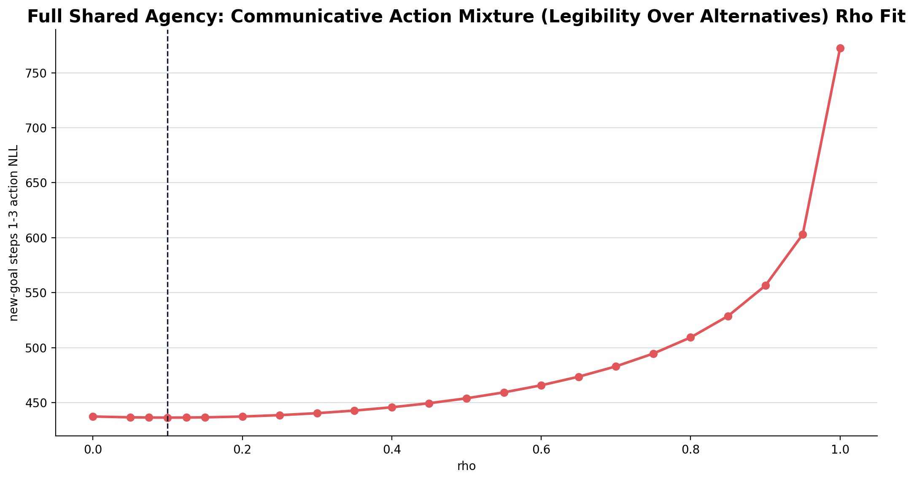
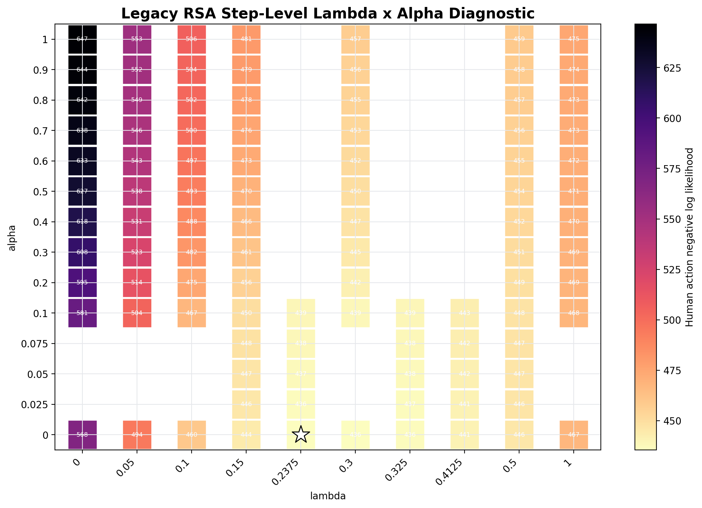
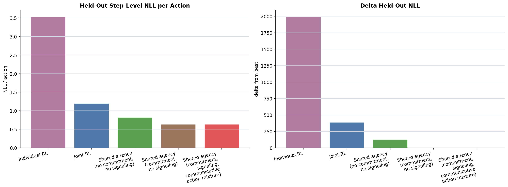
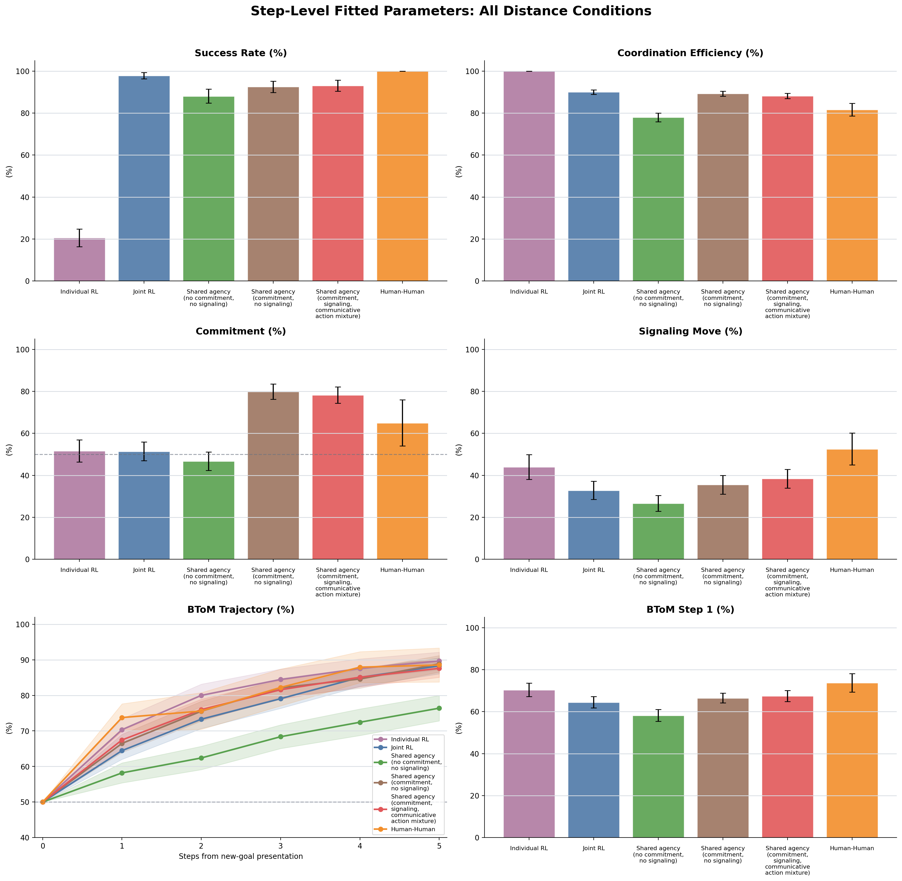
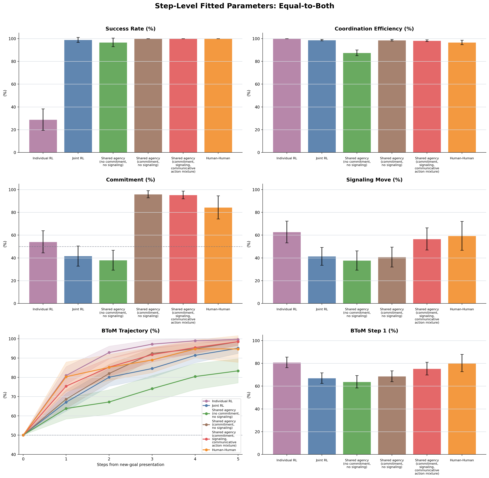
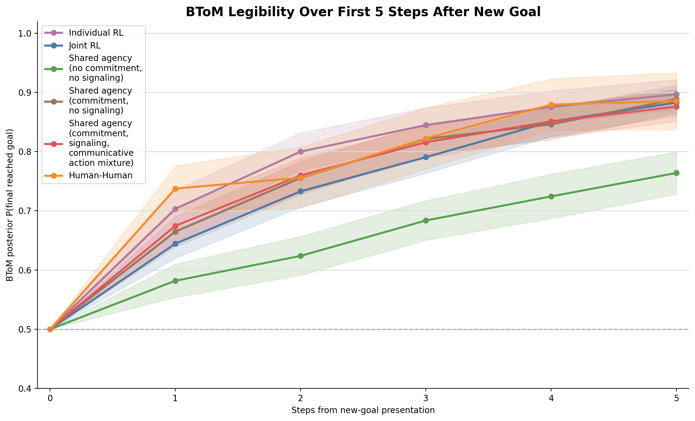

Primary Signal-Window Model Comparison
Best held-out model: Shared agency commitment no signaling. Lower NLL is better. Held-out folds are grouped by room ID to avoid scoring actions from the same dyad in both train and test splits.
| model | lambda | alpha | rho | n_params | actions | in_sample_nll | heldout_nll | heldout_nll_per_action | delta_heldout_nll | aic | bic |
|---|---|---|---|---|---|---|---|---|---|---|---|
| Shared agency commitment no signaling | 0.24 | 0.00 | 1 | 688 | 435.534 | 437.669 | 0.636 | 0.000 | 873.07 | 877.60 | |
| Shared agency commitment signaling (Communicative Action Mixture (Legibility Over Alternatives)) | 0.20 | 0.10 | 1 | 688 | 436.449 | 438.117 | 0.637 | 0.448 | 874.90 | 879.43 | |
| Shared agency no commitment no signaling | 0.00 | 0.00 | 0 | 688 | 567.505 | 567.505 | 0.825 | 129.837 | 1135.01 | 1135.01 | |
| Joint RL | 0 | 688 | 827.107 | 827.107 | 1.202 | 389.438 | 1654.21 | 1654.21 | |||
| Individual RL | 0 | 688 | 2431.148 | 2431.148 | 3.534 | 1993.479 | 4862.30 | 4862.30 |
Full Shared-Agency Communicative Action Mixture (Legibility Over Alternatives) Fit
Full-data signal-window best: lambda=0.2, rho=0.1, NLL=436.45. This setting is used for the simulated shared-agency commitment+signaling row below.

Legacy RSA Lambda x Alpha Diagnostic
The former RSA/log-posterior signaling fit is retained as a diagnostic only. Full-data legacy best: lambda=0.2375, alpha=0, NLL=435.53. It is not the primary full shared-agency row.

Held-Out NLL Plot

Posterior Predictive Checks: All Distance Conditions

Posterior Predictive Checks: Equal-to-Both

BToM Trajectory

Trial-Level Best vs Step-Level Best
This table compares the Communicative Action Mixture (Legibility Over Alternatives) setting selected by trial-level commitment+signaling binomial NLL against the setting selected by new-goal steps 1-3 human action NLL.
| fit_source | lambda | rho | signal_window_step_level_nll | average_commitment_percent | average_signaling_percent | equal_commitment_percent | equal_signaling_percent |
|---|---|---|---|---|---|---|---|
| trial-level commitment+signaling binomial NLL | 0.20 | 0.50 | 453.990 | 72.42 | 42.44 | 93.89 | 65.00 |
| step-level new-goal steps 1-3 action NLL | 0.20 | 0.10 | 436.449 | 78.23 | 38.38 | 95.28 | 56.67 |
Raw Sources
| model | lambda | alpha | rho | score | rawTrialsPath |
|---|---|---|---|---|---|
| Individual RL | /Users/chengshaozhe/Documents/DukeECClab/code/multiplePlayerGridGame_socketIO/dataAnalysis/raw_data/model_model_simulations/joint_rl/shared_agency_step_level_model_comparison/individual_rl/joint_rl_vs_joint_rl_2p3g_raw_trials_individual_sessions_0_to_29.json.zst | ||||
| Joint RL | /Users/chengshaozhe/Documents/DukeECClab/code/multiplePlayerGridGame_socketIO/dataAnalysis/raw_data/model_model_simulations/joint_rl/shared_agency_step_level_model_comparison/joint_rl/joint_rl_vs_joint_rl_2p3g_raw_trials_unshaped_sessions_0_to_29.json.zst | ||||
| Shared agency no commitment no signaling | 0.00 | 0.00 | /Users/chengshaozhe/Documents/DukeECClab/code/multiplePlayerGridGame_socketIO/dataAnalysis/raw_data/model_model_simulations/joint_rl/shared_agency_step_level_model_comparison/shared_agency_no_commitment_no_signaling/always_signal_vs_always_signal_2p3g_raw_trials_beta_3_lambda_0_alpha_0_sessions_0_to_29.json.zst | ||
| Shared agency commitment no signaling | 0.24 | 0.00 | /Users/chengshaozhe/Documents/DukeECClab/code/multiplePlayerGridGame_socketIO/dataAnalysis/raw_data/model_model_simulations/joint_rl/shared_agency_step_level_model_comparison/shared_agency_commitment_no_signaling/always_signal_vs_always_signal_2p3g_raw_trials_beta_3_lambda_0p2375_alpha_0_sessions_0_to_29.json.zst | ||
| Shared agency commitment signaling (Communicative Action Mixture (Legibility Over Alternatives)) | 0.20 | 0.10 | costly_mixture | /Users/chengshaozhe/Documents/DukeECClab/code/multiplePlayerGridGame_socketIO/dataAnalysis/raw_data/model_model_simulations/joint_rl/shared_agency_costly_mixture_step_level_fit/step1_3_fit/always_signal_vs_always_signal_2p3g_raw_trials_beta_3_lambda_0p2_alpha_0p1_score_costly_mixture_sessions_0_to_29.json.zst |